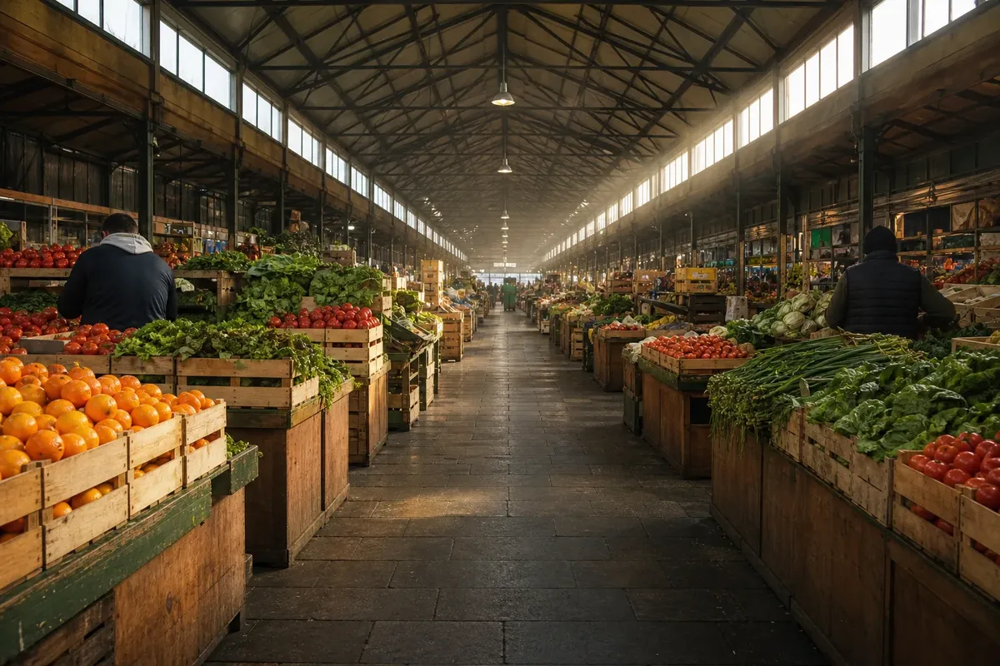

Notes from a market that keeps its own hours
The stalls open before the light does, and by the time the aisle fills the day already has a rhythm 🍊 that nobody wrote down.

More from the archive
Reading a page like this one is mostly a matter of deciding what to ignore. The prose sits between a photograph, a video card, and a grid of things you have not asked for yet — each of them competing for the same second of attention.
That competition is the thing being demonstrated here. Nothing on this page is removed; everything is still one gesture away 📷 whenever you decide it is worth looking at.
Below the fold there is more of the same: a player frame, a list of related notes, and four cards whose thumbnails are doing most of the arguing.
The text stays where it is. That is the entire point of the arrangement.
Related notes
- A bench, photographed from directly above
- What a lake sounds like before eight
- Three crates of oranges and a ledger
- On keeping the aisle clear